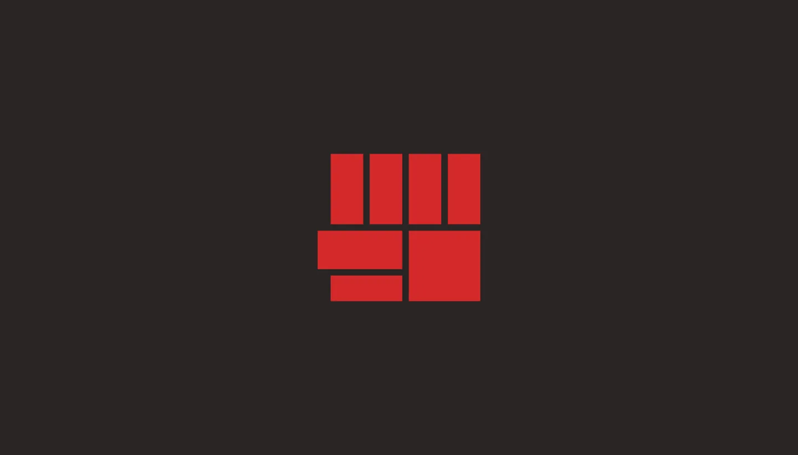

Вход
Мы живём в эпоху, когда частные корпорации стали аналогом государства — со свойственными ему инструментами управления и пропаганды своих продуктов, идей и услуг для массового потребителя через разные манипуляции.
В погоне за вниманием и деньгами клиентов такие корпорации-«государства» используют те же принципы и механизмы воздействия на массовое сознание, что и пропагандисты ведущих государств в истории в целом и в XX веке в частности.
Современные рекламщики и пиарщики, порой сами того не подозревая, используют опыт таких исторических личностей, как Сталин, Ленин и другие политики и мыслители подобного ранга. Черчилль и Геббельс — тоже пример зарождения фундаментальных принципов пропаганды и рекламы, но в иной общественно-экономической формации.
Как государства тянутся к абсолютной власти, чтобы диктовать свои правила, так и частные компании внутри государства тянутся к монополии, накапливая «капитал» как эквивалент своей власти на внутреннем и внешнем рынке.
Менеджеры, рекламщики и пиарщики таких «государств» помогают компании, где они работают, обретать всё бо́льшую власть в рамках государства и за его пределами.
С помощью IT-продуктов как инструмента влияния в цифровой среде корпорации-«государства» распространяют своё влияние и захватывают новые территории рынка, поглощая стартапы, малый и средний бизнес и стремясь к монополии.
Проблематика
В своё время нас убеждали, что «свободный рынок» — это честная конкуренция, справедливость и прогресс. Однако я вижу лишь подлость и малодушие в погоне за абсолютной властью и желание подавить конкурентов, чтобы остаться своей «кастой» и единолично влиять на рынок, устанавливая свои правила ради сверхприбыли. В такой природе отношений нет и не было желания прогресса для масс и укрепления государства.
Более того, при власти частных монополий под вопросом оказывается само существование государства в перспективе. Нет здесь и тех благих демократических форм отношений, в которых убеждали мой народ, разворовывая советское наследие на сломе эпох. Однако это данность, в которой приходится находиться и действовать по её правилам, неся свою волю.
В то время, когда нам необходимо создавать собственные IT-продукты ради укрепления общего, единого государства, некоторые компании умудряются «пилить» госбюджет, отрабатывая деньги налогоплательщиков из разных фондов под эгидой патриотизма и прочих, часто лживых, лозунгов.
Другой пример — корпорации, существующие за счёт бюджета государства, разрабатывают продукт как им вздумается, не глядя на отзывы пользователей, их потребности и проблемы, — потому что доступ к финансированию у них неограничен. В таких условиях нет ни искомой спекулянтами «честной конкуренции», ни развития продукта под потребности конечных пользователей. По сути, это паразитирование.
Такая форма отношений между рыночной политикой и человеком — прежде всего про деньги, и рядовой гражданин в ней лишь объект. Он живёт для государства и корпорации, а не государство и корпорация живут для гражданина, решая его истинные проблемы. О симбиозе здесь говорить не приходится.
Время, когда мировая история видела пример содружества и симбиоза государства и человека (большинства населения), прошло. То было советское время с иной общественно-экономической формацией, где жизнь государства поддерживалась большинством рабочих масс, а сама экономическая модель строилась на симбиозе государства и рабочего класса в условиях диктатуры образованного пролетариата — а не убогой знати, что якобы достойна править от бога, понимать и знать больше и жить лучше остальных, якобы «недостойных».
То, что в итоге и советская власть скатилась до уровня «номенклатурной знати», говорит лишь о том, что шкурная природа внутренних предателей взяла бразды правления, прекратив развитие сталинского марксизма в теории и практике и развитие советского социализма как новой формации.
Сегодня мы так или иначе вернулись к подобным формам отношений, прикрытым «честным» рынком и «честной» конкуренцией, и живём в лицемерном обществе. Границы морали и нравственности всё больше размываются ради прибыли выгодоприобретателей.
Всё это работает цепной реакцией, в основе которой — примитивное мышление на уровне обезьяны, живущей инстинктами и желаниями. Их всячески поощряют и поддерживают те, кому это выгодно, не задаваясь вопросом о перспективах для народа, государства и человечества в целом.
«Этика конкуренции и рыночных отношений»
Из этих рассуждений я прихожу к выводу: если мы живём в условиях рынка, то ради общего прогресса нужно способствовать развитию и поддержке конкуренции — на рынке в целом и на рынке IT в частности. Это лишило бы частные корпорации возможности обрести единоличную власть и влияние на рынке, поддержало бы баланс сил и укрепило государство.
Мой взгляд на рыночные отношения формирует рыночную мораль и «этику конкуренции», где накопленные знания поведенческой психологии, пропаганды и рекламы используются ответственно, осознанно и во благо общества и государства.
Сегодня же из-за незнания и малограмотности общества, из-за восприятия человека как объекта отношений, а не их субъекта, эти инструменты и знания часто используются ради провокаций и манипуляций в погоне за той или иной выгодой. Рынок действует по принципу «здесь и сейчас», не думая об общих интересах и ответственности перед будущими поколениями страны.
Поэтому я сформулировал свой философский подход к рыночным отношениям и придерживаюсь его в коммерческой деятельности. Я назвал его «этика конкуренции и рыночных отношений» — «ЭКРО».
«Этика конкуренции и рыночных отношений» — подход к коммерческой деятельности, который ставит во главу угла интересы общества, поддерживает конкуренцию и инновации, противостоит монополиям и манипуляциям и стремится к наиболее этичному бизнесу в рамках существующей капиталистической системы. Это баланс между прагматизмом и идеализмом, направленный на защиту человеческого достоинства в рыночной экономике и защиту государства.
Этот философский подход — критическая и этически ориентированная альтернатива существующей рыночной системе: с акцентом на поддержку конкуренции, защиту интересов общества и противодействие монополизации, элитаризму и манипулятивным практикам.
Семь ключевых принципов
- Поддержка конкуренции
- Конкуренция — двигатель прогресса и инноваций. Поддержка малого и среднего бизнеса и стартапов, решающих реальные проблемы общества, помогает избежать стагнации, вызванной монополизацией рынка крупными корпорациями
- Противодействие стремлению крупных игроков к абсолютной власти, которая ведёт к игнорированию потребностей общества и интересов государства
- Этический подход к бизнесу
- Постепенный отказ от манипулятивных практик, нарушающих законы морали и этики: «подсаживания на иглу» лудомании, психологических провокационных трюков в торговле
- Продукты, которые служат реальным потребностям пользователей, а не только интересам выгодоприобретателя
- Образование и просвещение как инструмент борьбы
- Через статьи, консультации и другие формы коммуникации — дать каждому участнику рыночных отношений возможность видеть, как работает рынок, понимать механизмы манипулятивного влияния, распознавать обман, делать осознанный выбор и становиться участником справедливой экономики (t.me/kvazardesign)
- Служение обществу и государству
- Бизнес и его продукты должны быть инструментом укрепления экономики и независимости государства
- Приоритет — проектам, которые развивают общество и защищают национальные интересы, а не интересы группы бенефициаров
- Критика капиталистической парадигмы и поиск баланса
- Осуждение «мироедской» природы рыночных отношений, основанных на обмане, спекуляциях и эксплуатации слабостей человека
- Признание необходимости действовать в рамках существующей системы, но с ироничным и критическим взглядом — меняя шаблоны общественно-экономических отношений через личный пример и сотрудничество с единомышленниками
- Прозрачность как основа доверия
- Приоритет открытости — например, открытые цены, которые раньше часто скрывали до «поимки» лида
- Следование своим ценностям на практике, в частности слову, данному в рекламе продукта или услуги
- Гибкость и адаптация
- Поиск новых решений и готовность пересматривать подходы, если меняются условия рынка или подходы перестают служить обществу
- Помощь стартапам и действующим продуктам в устойчивости, чтобы они выживали и росли даже в неопределённости. Моя философия — не догма, а живой процесс, который развивается вместе с рынком
Миссия «ЭКРО»
Способствовать созданию справедливого рынка, где бизнес служит человеку, обществу и государству, а общество и государство, в свою очередь, контролируют рынок. Ломать парадигму, основанную на обмане и манипуляциях, через поддержку конкуренции и этических стандартов.
Ценности «ЭКРО»
Честность. Служение обществу. Поддержка инноваций. Защита наиболее уязвимых игроков рынка. Противодействие монополиям и поиск баланса. Противодействие спекуляциям и вредоносным манипуляциям.
Зачем мне это?

Люди обманывают, а рынок зарабатывает на обмане и на «лохах по теме» — тех, кто мало понимает в конкретном направлении или в том, как устроена жизнь. Добавьте сюда жадность и глупость, на которых люди с недобросовестными намерениями строят бизнес, зарабатывая на чужих слабостях и невежестве.
Невежество — главная уязвимость, на которой наживаются недобросовестные участники рынка. Сегодня важно не только защищать пользователей и предпринимателей от манипуляций, но и вооружать их знаниями, чтобы они сами принимали решения и понимали, как ими могут управлять те, чьи помыслы недобросовестны и преступны.
Цель микро:
Продвигать и укреплять своё позиционирование на рынке IT, предоставляя свою экспертизу для создания социально значимых продуктов.
Сюда входит поддержка конкуренции через помощь малому и среднему бизнесу, отказ от манипулятивных практик и фокус на «этичном дизайне». В итоге — через личный пример и просвещение (консультации, статьи в t.me/kvazardesign) способствовать формированию рыночной этики, где знания поведенческой психологии и рекламы используются осознанно и во благо общества, помогая людям распознавать обман и становиться активными участниками справедливой экономики.
Цель миди:
Изменить шаблоны общественно-экономических отношений через личный пример этичного бизнеса и сотрудничество с идейными партнёрами, разделяющими ценности «ЭКРО».
Образование, профессиональные навыки и капитал рассматриваются не как инструменты личного обогащения и власти, а как инструменты борьбы с политикой корыстных манипуляций, властью монополий и транснациональных корпораций, которые используют невежество, жадность и слабости людей в личных интересах.
Через поддержку инноваций, защиту слабых игроков (малого и среднего бизнеса), а также проектов, укрепляющих экономику и независимость государства, — способствовать балансу сил на рынке. Это включает критику рыночной природы, основанной на спекуляциях и манипуляциях, продвижение «прозрачности» и образования, чтобы наши мечты и идеи служили благу народа и Родины.
Цель макро:
В основе всего этого лежит цель слома фундаментальной парадигмы, основанной на обмане, манипуляциях, спекуляциях и использовании человеческого невежества и малограмотности населения ради приобретения личной выгоды.
Цель макро подразумевает создание наиболее справедливого рынка и принципов конкуренции. Это такая форма отношений, где бизнес служит человеку, обществу и государству, а общество и государство обеспечивают контроль и защиту от корыстных намерений частного бизнеса, направленных на личную выгоду вне общественных и государственных интересов, — на тех уровнях ответственности, где подобное недопустимо.
Человечество заслуживает лучшего. Нужно лишь подать пример и направить его: всё решают помыслы сильных людей — тех, у кого есть та или иная власть, или тех, кто хочет бороться с подобной природой. Если же идти лёгким путём в парадигме «человек человеку — волк», мы не построим лучший мир и будем заслуживать лишь последствий нашего общего невежества, жадности, тупости и трусости.
С другой стороны, я не пытаюсь строить «новый мир», меняя общественно-экономическую формацию и ища революционные пути, как наши великие предки — большевики и ранняя советская власть, боровшиеся со старой формацией феодально-рыночных эксплуататоров и «мироедов». Последние, прикрываясь благим делом, порабощали и грабили свой и чужие народы, оправдывая свою политику «господом», бреднями мифотворцев и прочей вредоносной пропагандой. Мой путь лежит в капиталистическом мире, просто со своей, более ироничной точкой зрения. Это игра на балансе в обстоятельствах действительности — за неимением социалистических форм социально-экономических отношений.
Моя миссия
Поддерживать равновесие на рынке и способствовать формированию более образованного общества. Укреплять государственную экономику и единство страны. Противостоять доминированию монополий, продвигая принципы этичной конкуренции («ЭКРО»).
Свод правил
Не работаю с религиозными и околорелигиозными организациями, в особенности с разносортными языческими сектами, а также с букмекерскими конторами, националистическими организациями, онлайн-казино и подобными мудаками.
Работаю в основном с малым и средним бизнесом, а также помогаю развивать социально значимые стартапы.
Не веду деятельность по принципу «клиент всегда прав». Помогаю прорабатывать стратегию дизайна продукта и услуги так, чтобы было удобно пользователю. Опираюсь на данные о бизнесе и рынке, свой профессиональный опыт и мнение. Первым делом — благо пользователя, потом — всё остальное.
Не использую инструменты поведенческой психологии, психологические трюки и манипуляции во вред человеку и обществу ради интересов выгодоприобретателя, пользуясь незнанием и неосведомлённостью пользователей. Например, манипуляции, чтобы «подсадить на иглу» лудомании.
Не обслуживаю вкусы заказчика и его менеджеров. Наше сотрудничество направлено на благо конечного пользователя, чей приятный пользовательский опыт хорошо скажется и на бизнесе. Первым делом — благо пользователей, потом — всё остальное.
Работаю обоснованно и обстоятельно подбираю инструменты под поставленные задачи. Не следую слепо трендам, модным методологиям или новым теориям, как адепты карго-культа, только потому, что «так делают на западе» или «так делает кто-то где-то». К каждому делу подхожу с мыслью человека, а не с подражанием карго-культной обезьяны.
Уважаю свободу воли и труд каждого сокомандника и отстаиваю его права и интересы перед тем, кто на них посягает в рамках трудовых отношений.
В мою команду по своей воле входят только те специалисты, кто разделяет моё мировоззрение, с любовью относится к своей специализации, не замыкается в рамках правил и находит новые концепции и идеи для решения задач.
Уважаю и ценю каждого адекватного, человекоориентированного клиента и отношусь к нему с максимальным пониманием и лояльностью. Таким клиентам я всегда пойду на уступки и найду компромисс в сложной ситуации — пока клиент не нарушит границы личных отношений и не заденет честь и достоинство мои и моих сокомандников.
Дизайн как предмет деятельности — производное мысли дизайнера или группы дизайнеров, и его цена определяется ценностью дизайнера. Эта ценность не поддаётся грубым процессам ценообразования. Поэтому уровень цен складывается из комплекса обстоятельств, где косвенно учитываются цены конкурентов, спрос и предложение на рынке и другие факторы.
Не присваиваю себе заслуги дизайнера, работающего над проектом, а, напротив, освещаю его работу и указываю авторство в каждом проекте, чтобы он развивался и зарабатывал личную репутацию, которая поможет его карьере и вне сотрудничества со мной. Я противник паразитирования на личности и труде человека. Веду коллективную деятельность ради общего дела и процветания продукта, представляя новые формы локальных социально-экономических отношений.
Каждый сотрудник Студии сам себе начальник и подчинённый. Мы смотрим на результат и чаще всего корректируем политику компании, внутренние и внешние отношения коллективными решениями. Исключение — сложные критические ситуации: ответственность за решение в них лежит на основателе Студии.
Выход
Если у вас есть стартап или действующий социально значимый продукт в IT или GameDev и вам нужна помощь в продуктовом дизайне, UX-дизайне, дизайн-консалтинге или сервис-дизайне, свяжитесь со мной.
- Телеграм:
- bushkovf
- Почта:
- bushkovf@mail.ru
- Телефон:
- +7 909 135-22-48